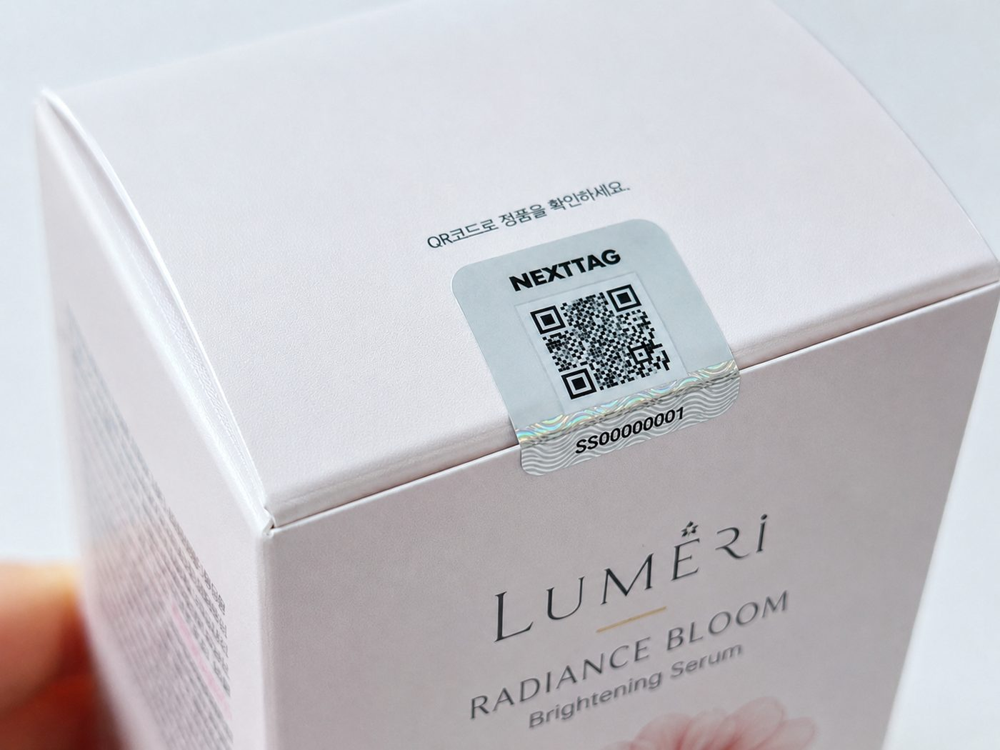
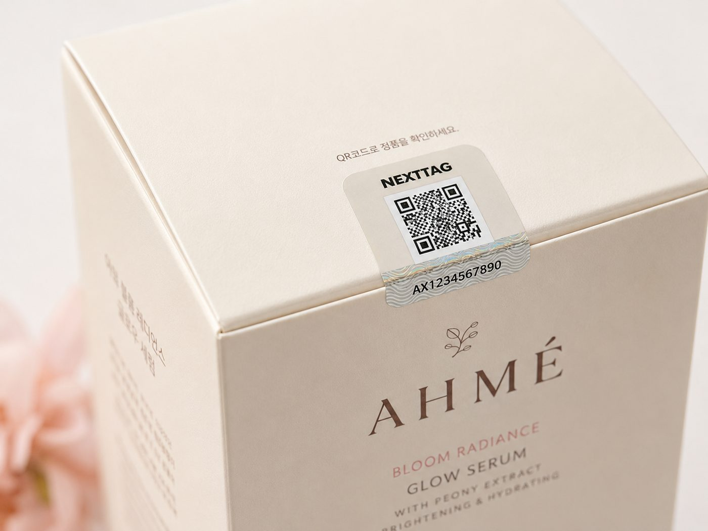
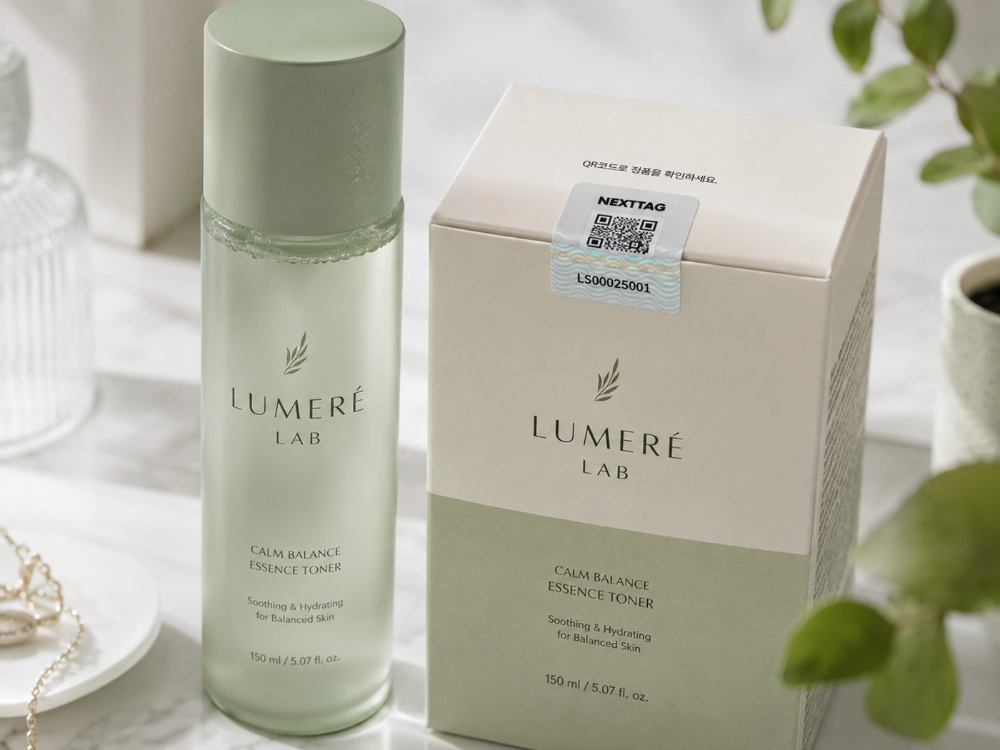
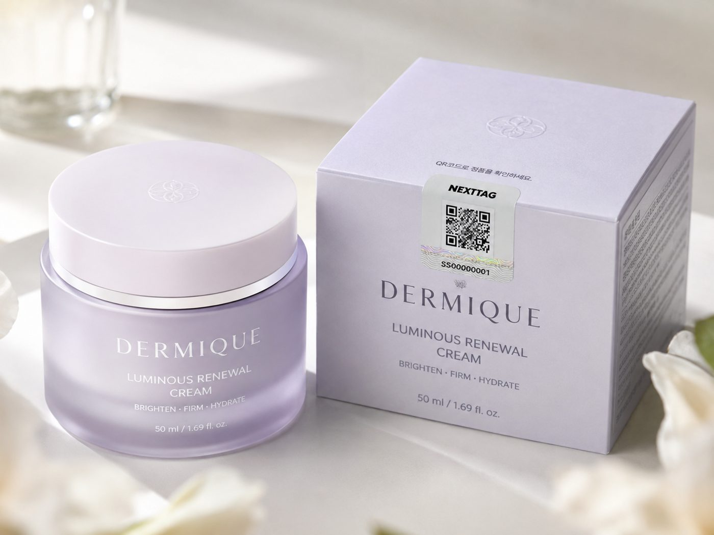

위조 화장품은 2025년 적발 위조품 중 35.9%로 품목 1위, 발송국의 97.7%가 중국입니다. 출고 이후 통제력이 곧 브랜드 신뢰입니다.
가품 경험이 늘며 정품 여부를 확인하려는 소비자가 증가합니다. 인증 경험이 곧 구매 결정입니다.
병행수입·가품이 가격 질서와 사용 경험을 무너뜨려 재구매와 충성도를 잠식합니다.
가품으로 인한 트러블·불만이 정품 브랜드의 평판으로 전가됩니다.
출고 이후 현장 데이터가 끊겨 어느 채널·권역으로 새는지 알 수 없습니다.
정품 인증을 시작점으로, 유통 통제와 재구매 데이터까지 하나의 파이프라인으로 잇습니다.
제품마다 예측 불가능한 256-bit 난수 시리얼을 부여해 복제를 차단합니다. 소비자는 휴대폰 기본 카메라로 스캔해 즉시 정품을 확인하고, 그대로 브랜드 콘텐츠·재구매로 연결됩니다.
출고 권역과 실제 스캔 권역을 대조해 병행수입·비인가 채널을 실시간으로 판정합니다. 중국발 가품과 권역 이탈을 제품 단위 데이터로 잡아 가격 질서를 지킵니다.
동의 기반 스캔 데이터(빈도·권역·재구매 주기)를 1st-party 자산으로 적재합니다. 개인 식별 없이 세그먼트화해 CRM·리타겟팅에 재활용하고, 신규 매출 기회로 전환합니다.
제품별 난수 시리얼 생성, 보안 라벨 출력·부착 후 출고 데이터 바인딩.
물류 1스캔 전수검수, 소비자 카메라 스캔으로 즉시 정품 판정.
출고–시장 대조로 권역 이탈·병행유통 판정, 표적 회수·차단.
이벤트를 WORM 원장에 기록, 1st-party 데이터로 CRM 재활용.
실제 제품에 부착된 난수 QR — 소비자는 스캔 한 번으로 정품을 확인하고, 브랜드는 출고 이후를 관제합니다.



